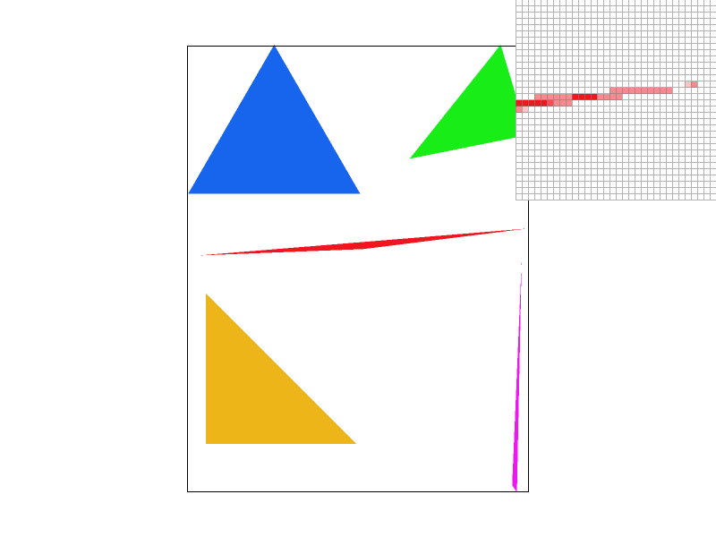
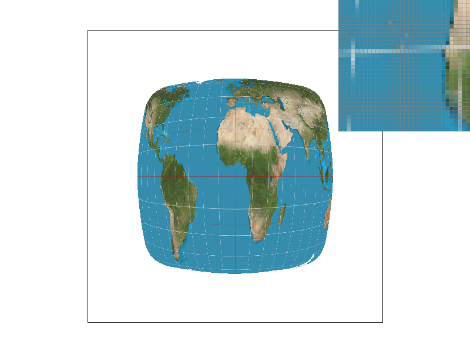
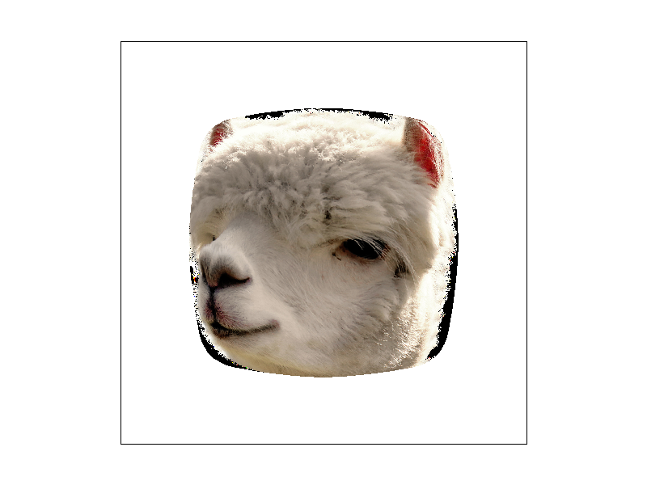
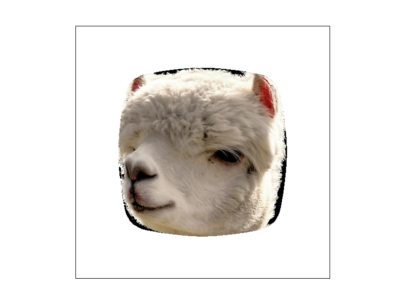
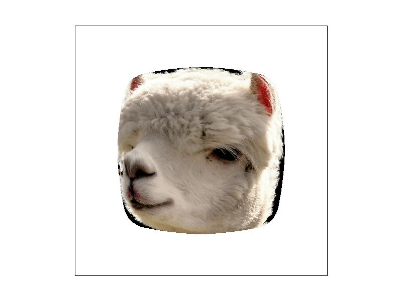

Overview
This project walked through the process of triangle rasterization, different methods to sample for better rasterizing outputs, and also ways to apply calculations like barycentric coordinates to allow for mappings between different spaces in order to add additional details like textures to a rendering. Problems that arose often included bounding/margin errors (mitigated through boundary tolerance), and general attention to small details such as making sure calculations were being performed in the correct coordinate spaces (for example, screen vs. texture). Something interesting that I learned through this project was seeing how textures mapped onto an otherwise flat image can make such a big difference, and being able to implement that to see what happens during the mapping was a really cool part of the process.
Section I: Rasterization
Part 1: Rasterizing Single-Color Triangles
This part required utilizing the three-line test to figure out if a given point was in the bounds of the triangle, and then coloring that triangle in using the predefined fill_pixel function. First, I created a function inside_tri that, given triangle coordinates and the points we wanted to test, returned 1 if the point was in the triangle, and 0 otherwise. To test if a point is inside the triangle, I used the three-line test formulas as defined in Lecture 2, checking if a point (x, y) fulfilled one of two possible scenarios: 1) All 3 line tests yielded >= 0, or 2) All 3 line tests yielded < 0. The second case is to account for the fact that our vertices are not always given in a counterclockwise order. To iterate through no more than the box bounds of the triangle, I set the bounds of the double for loops as the minimum to maximum x-vertex values, and likewise the minimum to maximum y-vertex values, using the standard C++ min and max functions. Thus my algorithm is indeed no worse than checking each sample within the bounding box as that is what I am doing.
In the photo above, due to aliasing there are jaggies at the sharpest edges of the triangle.
Part 2: Antialiasing triangles
This portion required updating previous code as well as several parts of copy/pasting the resizing and fill code such that we could utilize a supersample buffer. Then, the code from part 1 was updated to be able to account for supersampling, assuming that we would “always supersample” the sample_rate, where a sample_rate of 1 would perform as if there was no supersample. This involved calculating the offset for the centers of subpixels depending on the sample rate, and iterating over the number of subpixels per pixel rather than just the pixels. Instead of directly storing pixels into the framebuffer, the supersamples first needed to be input into a new, larger buffer, and then at the very end downsampled back to the output framebuffer size by averaging the color values. Supersampling is useful because it allows the user to (in this case) perform the line test over “subpixels” of each pixel, and then blurring the color contents of those subpixels to create a gradient effect, which in turn creates smoother edges and antialiases.
|
|

|
In the images above, the image with sample rate 1 has jaggies, relying on whether the center of each pixel passes the 3-line test. This means that a pixel where it’s center was barely outside the triangle renders as outside the triangle, when the pixel should be a blend for better perceived edge smoothness. With sample rates 4 and 16, the blurring of colors is much more apparent, and the highest sample rate of 16 yields the most pixels filled in, but also more pixels with a gradient, as each pixel is sampled more often and thus the average over those will be more accurate/blended.
Part 3: Transforms
Since I love dance, I thought that it would be fun to do a rendering of cubeman in the middle of a disco move, where one hand is on the hip, and the other pointing diagonally outwards. The creation involved adjusting the translations of cubeman’s arms and legs, as well as adding rotations into the individual arm and leg segments.
Section II: Sampling
Part 4: Barycentric coordinates
Barycentric coordinates are another way of calculating across a triangle when sampling. By using the triangle vertices as “weights” - be it a color, vector, etc - any point that is inside the triangle has a value weighted by its distance to each respective vertex. Thus, depending on the location of the point inside the triangle, its value is some blend of all three. To calculate barycentric coordinates, defined as alpha, beta, and gamma (which sum to 1), use several pre-defined formulas as follows: for alpha, calculate the position of the point with respect to line segment BC, divided by the A vertex with respect to line segment BC. Beta is calculated in the same way, but with respect to CA. Lastly, gamma must be the remaining of 1 - alpha - beta. If alpha, beta, gamma are either all nonnegative or all negative, then the point is inside the triangle, and the value is determined by point (x, y) = alpha*A + beta*B + gamma*C.

Part 5: "Pixel sampling" for texture mapping
Pixel sampling is when point samples are done per pixel, which may (not) be small squares. . Implementation is similar to rasterizing an interpolated triangle. For every screen sample, the (u, v) coordinate corresponding to each point is calculated using barycentric coordinates, and this is then passed into the texture to sample using one of two methods - Using nearest pixel sampling will simply retrieve the value of the closest pixel to the (u, v) coordinate. Rounding the (u, v) coordinates scaled to the texture map gives the closest pixel. Using bilinear pixel sampling is a little more involved - first find the four nearest pixels in texture space, and then find the offset of the bottom leftmost close pixel to the scaled (u, v) coordinate point. Then, perform linear interpolation across the four closest pixels three times: two horizontally, and the last one vertically. This returns an interpolated value of the sampled pixel based on the pixels around it.
|
|
|
|
|

|
It is noticeable that the bilinear sampling tends to produce clearer, more “blended” output with less jaggies, which rasterizes a sharper image. Typically, bilinear sampling will dominate over nearest pixel sampling when the image is lower resolution, since there are less pixels for nearest sampling to gather information from. Since bilinear sampling using interpolation, it takes into account more data per pixel, thus providing a clearer output. If an image has very high resolution, then the nearest sampling method may not be much worse than bilinear sampling, since there are more to choose from.
Part 6: "Level sampling" with mipmaps for texture mapping
Essentially, level sampling is a method of adjusting the texture of a given image when the textures are minified. Since these texture mappings have been downsampled and stored into mipmaps, sampling at the level which most closely approximates the screen sample rate will return the best results. Implementing level sampling required calculating the correct mipmap level to use, which itself required several calculations of the difference vectors of barycentric coordinates of each sample point in screen space. After calculating the barycentric coordinates of (x, y), (x + 1, y) and (x, y + 1) to map these points into texture space, then using the formula mentioned in lecture D = log2(max(sqrt((du/dx)^2 + (dv/dx)^2), sqrt((du/dy)^2 + (dv/dy)^2))) gives the best mipmap level.
|

|

|
|

|
|
In the image captions above, "texture1" refers to the texture mapping using for test1.svg in the texmap folder. While the differences between these photos are not large, it is also obvious that bilinear sampling typically returns a sharper image output.
Speed vs. Memory vs. Antialiasing Power:
Simply sampling as is (point by point) will provide a speed and memory usage dependent on the image size, and little to no antialiasing. With supersampling, while antialiasing power is heightened because it allows for more detail and precision per sample, the speed and memory required are scaled at the supersampling rate, which can become extremely costly and thus not always the best choice. With bilinear sampling, since it uses interpolation of nearby points (aka a weighted average), it gives a similar quality result to that of supersampling, however is much faster. With level sampling (using mipmaps), more storage is generally required in order to store the texture information, however as the level increases, less storage is needed for the mipmap, and rendering time is also faster, with more antialiasing - sometimes to a point of over-blurring.